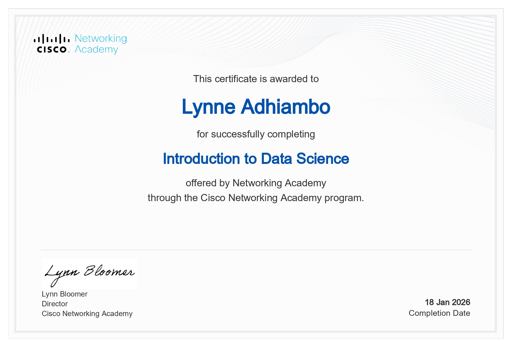

CERTIFICATIONS

introduction to modern AI
QA_QE Certification

Introduction to Data Science
The Intersection of Earth Science ,spatial modelling & Data Automation
I am Lynne Adhiambo, a GIS and geospatial data scientist driven by a passion for transforming earth observation data into meaningful insights that solve real-world problems. My mission is to harness spatial intelligence, machine learning, and technology to understand our world better, protect vulnerable communities, and build data-driven solutions that create lasting impact at a global scale.
Years in GIS/RS
4+ years leveraging GIS/RS tools in real-world scenarios.
Model Accuracy
Landslide Susceptibility Model achieved an 87% predictive accuracy.
Conflict Research Intern
Quantitative Research Intern for the eEARTH Project (International Crisis Group).
Developer Certified
Certified in Full Stack Development and Quality Assurance/Engineering.
I am a Geospatial Analyst and Developer with strong expertise in applying machine learning techniques and Python-based automation for geospatial data processing, spatial analysis, and visualization. A graduate of Dedan Kimathi University of Technology, I have contributed to data-driven solutions in land use planning, environmental management, disaster risk assessment, and geospatial modeling. My professional focus is on leveraging geospatial technologies to address complex real-world challenges and support sustainable development across multiple sectors.
- Participating in innovation and digital transformation programmes under ICTA.
- Supporting technology-driven projects focused on public sector innovation.
- Contributing to idea generation, problem-solving, and solution design sessions.
- Assisting in research on emerging technologies (AI, data, digital platforms).
- Collaborating with multidisciplinary teams on innovation initiatives.
- Attending capacity-building workshops, mentorship sessions, and technical training.
- Processed and analyzed high-resolution satellite imagery and geospatial data to assess environmental factors linked to resource-based conflicts.
- Developed automated R workflows to streamline large-scale raster data analysis and reduce processing time.
- Conducted spatial analysis using ArcGIS, QGIS, and R to identify links between environmental stress indicators and conflict incidents.
- Collaborated with analysts to integrate earth observation data with field research, producing insights for conflict prevention .
- Managed and analyzed large geospatial datasets from multiple sources including Sentinel-2, Landsat, and conflict databases (ACLED).
- Designed and implemented quantitative research methodologies to evaluate relationships between environmental factors and conflict dynamics.
- Conducted spatial data collection, management, and analysis to support road infrastructure planning and maintenance projects.
- Updated and maintained the geospatial database of the national highways network using GIS tools like ArcGIS and QGIS.
- Performed spatial analysis to identify suitable routes for new road projects, considering environmental, social, and economic factors.
- Assisted in preparing detailed maps and reports for various stakeholders, ensuring accuracy and clarity.
- Collaborated with engineers and planners to integrate geospatial insights into road project designs and plans.
- Supported field teams with GPS data collection and provided troubleshooting assistance for data accuracy issues.
Each project demonstrates my ability to combine GIS, machine learning,spatial modelling and automation to extract meaning from complex spatial data and develop solutions that address real-world environmental and societal challenges.
Designed a highly accurate spatial model using Random Forest Machine Learning Model to predict and assess disaster risk zones. The model evaluated impacts on critical infrastructure like agriculture,roads,schools and bridges.
View Project PageAn early warning system combining earth observation technology with Crisis Group's field intelligence to anticipate resource-based conflicts before escalation, focusing on climate-food-water security vulnerabilities.
View Project PageUtilized the DSSAT Ceres-maize model and SVM to simulate and predict maize yield, focusing on crop sensitivity to environmental changes identified through remote sensing.
View Project PageHighly organized technical capabilities, My expertise spans GIS, remote sensing, programming, and predictive modeling, enabling innovative solutions for environmental, infrastructural, and societal challenges.
introduction to modern AI
QA_QE Certification
Introduction to Data Science
Let's build something extraordinary together.